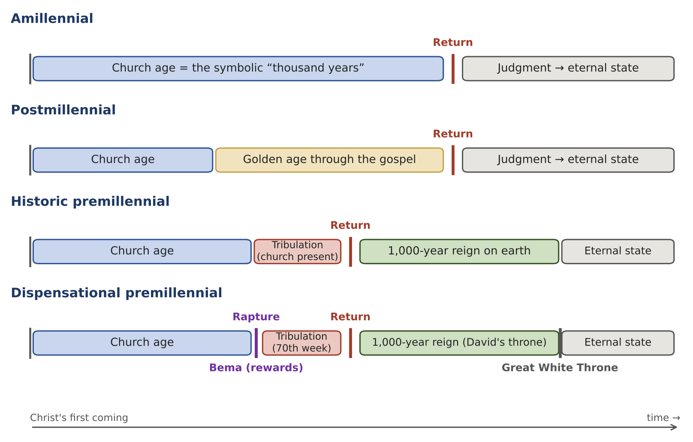
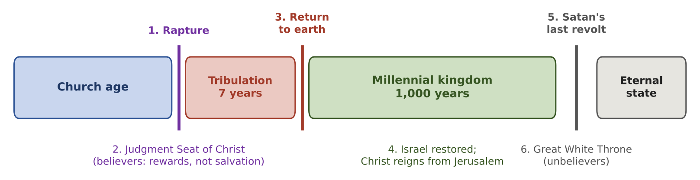

Many churches have quietly stopped teaching the last things. Some leaders fear division. Others have seen prophecy turned into charts, headlines and date-setting, and want no part of it. A few simply say, "It will all pan out in the end." This paper argues that silence is not neutral. Every Christian already holds an eschatology, whether stated or assumed, and that view is quietly steering how he reads the Bible, how he understands Israel and the church, what he expects of history, and even how sure he is of his own standing before God.
The paper has three jobs. First, it makes the case that eschatology belongs in the regular teaching of the church. Second, it lays out the main views of the millennium and the end, stated as their own best advocates would state them, and traces how each one ripples into the rest of systematic theology. Third, it gives the positive case for the position of this ministry: dispensational, premillennial and pretribulational, with Israel and the church kept distinct.
A Note on Sources
Each view is described from its own leading writers, not from its critics. Those writers are paraphrased and cited rather than quoted at length, and every citation names a work that can be checked. Where this paper draws on writers outside The Gospel Vault's usual Free Grace and Dallas Seminary sources, it does so to let other views speak for themselves, not to set this ministry's position. Scripture is quoted from the New American Standard Bible (1995).
A Note on Scope
This is a paper about why the question matters and which answer best fits the whole Bible. It is not a timeline of coming events, and it sets no dates. The details of the tribulation, the identity of the Antichrist and the order of judgments deserve their own studies. Here the focus stays on the millennium, the rapture, Israel and the church, and the way those choices shape a whole theology.
II. Why Eschatology Must Be Taught, Not Avoided
Eschatology belongs in the regular diet of the church because the apostles put it there, because Scripture ties it to comfort and holiness, and because no one can avoid having a view of it anyway. Five reasons make the case.
A. The Apostles Taught It to New Believers
Paul was in Thessalonica only a short time. Luke records that "for three Sabbaths [he] reasoned with them from the Scriptures" (Acts 17:2). Yet in that brief stay he taught the coming of the Lord, the day of the Lord and the man of lawlessness. When the young church was shaken by a false report, he reminded them:
Do you not remember that while I was still with you, I was telling you these things?
— 2 Thessalonians 2:5 (NASB95)
Paul did not treat prophecy as advanced material for specialists. He treated it as foundational for new believers. His first letter to them ends every chapter on the Lord's coming (1 Thess. 1:10; 2:19; 3:13; 4:16–17; 5:23). To leave it out is to teach less than Paul taught a congregation only weeks old.
B. The Whole Counsel of God Includes the End
Paul could tell the Ephesian elders, "I did not shrink from declaring to you the whole purpose of God" (Acts 20:27). The risen Lord rebuked two disciples as "slow of heart to believe in all that the prophets have spoken" (Luke 24:25). Large portions of the Old Testament prophets, the Olivet Discourse, much of the Thessalonian letters and the whole of Revelation look forward. If "all Scripture is inspired by God and profitable for teaching" (2 Tim. 3:16), then the prophetic Scriptures are profitable too. Revelation alone opens with a blessing on those who read, hear and heed it (Rev. 1:3).
C. Prophecy Is Given for Comfort, Hope and Holiness
Scripture never presents the future as a puzzle for the curious. It presents it as fuel for the Christian life.
Comfort in grief. Paul taught the rapture "so that you will not grieve as do the rest who have no hope" (1 Thess. 4:13), and closed, "Therefore comfort one another with these words" (4:18).
Hope that steadies. The believer lives "looking for the blessed hope and the appearing of the glory of our great God and Savior, Christ Jesus" (Titus 2:13).
Purity in the present. John writes that "everyone who has this hope fixed on Him purifies himself, just as He is pure" (1 John 3:3).
Faithfulness for reward. "We must all appear before the judgment seat of Christ" (2 Cor. 5:10). Believers who know an accounting is coming live and serve differently.
Urgency in fellowship. Believers are to keep meeting and encouraging one another, "and all the more as you see the day drawing near" (Heb. 10:25).
A church that drops prophecy loses each of these motives. It does not become calmer. It becomes poorer.
D. Silence Is Not Neutral
Every believer already holds an eschatology. Some absorb it from novels and films. Some absorb it from a vague sense that things will slowly get better, or that the Old Testament promises were "spiritual" all along. A church that never teaches the subject has not stayed neutral. It has simply let someone else do the teaching. When believers then meet date-setters, false prophets or confident claims that "the day of the Lord has come" (2 Thess. 2:2), they have nothing to steady them. Paul's answer to the shaken Thessalonians was not less prophecy but clearer prophecy.
E. Eschatology Is the Capstone of the System
The last reason is the subject of the rest of this paper. Eschatology is not a detachable appendix to theology. It is the place where every other doctrine reaches its goal. The way a teacher reads the prophets is the way he reads the whole Bible. The way he answers "What happens to Israel?" reveals what he believes about God's promises, the covenants and the church. A view of the end always comes bundled with a view of everything else. That is why the choice matters, and why it deserves to be taught openly, fairly and from the text.
III. The Main Views, Fairly Stated
Evangelical Christians agree on the essentials: Christ will return personally and bodily, the dead will be raised, and God will judge the world and make all things new. They differ chiefly over the "thousand years" of Revelation 20 and over the future of national Israel. Four views of the millennium, plus the preterist approach to prophecy, cover nearly the whole field. Each is stated here as its own advocates would state it.1
View
The thousand years
Christ returns
Future for national Israel
Representative writers
Amillennial
Symbolic of the present age; Christ reigns now from heaven
Once, at the end of this age, followed at once by the eternal state
None distinct; the church is the true Israel
Augustine, Hoekema, Riddlebarger
Postmillennial
A long golden age brought about through the gospel, before Christ returns
After the millennium
Often a large-scale turning of Jews to Christ, within the church
Edwards, Warfield, Boettner, Mathison
Historic premillennial
A future earthly reign of Christ after His return
Before the millennium, after the tribulation
Many expect a future turning of Israel, but usually within one people of God
Justin Martyr, Irenaeus, Ladd
Dispensational premillennial
A literal future 1,000-year reign of Christ on David's throne
For the church before the tribulation (rapture); with the church in glory after it
Yes: national restoration and literal fulfillment of the covenants
Chart 1. The four views of the millennium on one timeline. Each row is stated as its own advocates would draw it.
A. Amillennialism
Amillennialism holds that the thousand years of Revelation 20 is a symbolic picture of the whole present age, from Christ's first coming to His second. Satan was "bound" at the cross in the sense that he can no longer stop the gospel from reaching the nations (compare Matt. 12:29). The saints "reign with Christ" now: believers who have died reign with Him in heaven, and the church shares His rule on earth through the gospel. Its advocates prefer the term "realized millennialism," since they believe the millennium is not absent but present.2
Amillennialists usually read Revelation as a series of parallel visions, each covering the church age from a different angle, rather than one chronological sequence. They see one general resurrection and one general judgment at Christ's single return, followed immediately by the new heavens and new earth. The Old Testament promises to Israel find their fulfillment in Christ and in the church, so no separate future for national Israel is expected. Augustine's City of God (Book 20) gave this view its classic form, and it became the majority view of the Roman Catholic Church and of most Lutheran and Reformed churches.3
B. Postmillennialism
Postmillennialism holds that Christ will return after the millennium. Through the preaching of the gospel and the work of the Spirit, the great majority of the world's people will one day be converted, and the world will enjoy a long era of righteousness and peace. The parables of the mustard seed and the leaven (Matt. 13:31–33) picture this gradual, worldwide growth. The "millennium" may not be a literal 1,000 years; it is a long golden age within history, and then Christ returns to raise the dead and judge.4
Postmillennialism was strong among Puritans and in the revival preaching of Jonathan Edwards, and was widely held in nineteenth-century American Protestantism. It declined after the World Wars but has been revived, partly through the Reformed and reconstructionist movement. Its great strength, in the eyes of its advocates, is its confidence in the power of the gospel.
C. Historic Premillennialism
Historic premillennialism holds that Christ will return before a literal reign on earth. It is called "historic" because it was the dominant view of the earliest church writers: Papias, Justin Martyr and Irenaeus all expected a future earthly kingdom.5 In the modern era George Eldon Ladd gave it its best-known defense.
In this view the church passes through the great tribulation, and Christ returns after it, raising the righteous dead and establishing His kingdom. Most historic premillennialists see the New Testament as reinterpreting some Old Testament promises in the light of Christ, and they do not draw a sharp line between Israel and the church. Many still expect a future turning of ethnic Israel to Christ (Rom. 11:26), but usually as part of one people of God rather than as a distinct national program.6
D. Dispensational Premillennialism
Dispensational premillennialism also holds that Christ will return before a literal reign on earth, but it is built on three convictions that set it apart. First, Scripture, including prophecy, is to be read in its normal, plain sense. Second, God has a distinct program for national Israel and a distinct program for the church, and He will keep every promise He made to Israel. Third, the unifying purpose of history is the glory of God, displayed in several stewardships or "dispensations."7
From these convictions come the familiar features of the view. The church, the body of Christ, began at Pentecost and will be caught up to meet the Lord before the seventieth week of Daniel, the tribulation (Dan. 9:27). That week is chiefly about Israel. At its end Christ returns to the earth, judges the nations, restores repentant Israel and reigns from Jerusalem for a thousand years. Satan is bound for that period (Rev. 20:2–3), released briefly, and finally judged. Then comes the Great White Throne and the eternal state. This view was systematized by J. N. Darby and popularized by the Scofield Reference Bible (1909; revised 1917). Dallas Theological Seminary, through Lewis Sperry Chafer, John F. Walvoord, Charles C. Ryrie and J. Dwight Pentecost, gave it its fullest theological form.8
A newer form, "progressive dispensationalism," keeps the future for Israel and the premillennial return but sees more continuity between Israel and the church and holds that Christ's Davidic reign has already begun in a preliminary sense. This paper holds to the classic, or normative, form taught at Dallas Seminary and summarized by Ryrie.9
E. Preterism
Preterism (from the Latin for "past") is not a view of the millennium as such but an approach to prophecy. It holds that most of the prophecies of the Olivet Discourse and Revelation were fulfilled in the first century, especially in the Roman destruction of Jerusalem in A.D. 70. A key text is Matthew 24:34: "this generation will not pass away until all these things take place."
Partial preterism, held by some amillennialists and many postmillennialists, still affirms a future bodily return of Christ, a future resurrection and a final judgment. R. C. Sproul's The Last Days According to Jesus is a well-known example.10 Full preterism goes further and claims that the second coming and the resurrection have already happened. Every major branch of the church rejects that position, because it repeats the error Paul condemned in Hymenaeus and Philetus, "saying that the resurrection has already taken place" (2 Tim. 2:18).
IV. How an End-Times View Ripples Through Systematic Theology
A view of the millennium is never only a view of the millennium. It rests on a way of reading the Bible, and it pulls a whole set of other doctrines along with it. The table below shows where the two great families of interpretation lead. The sections that follow trace each line.
Doctrine
If Israel's promises are fulfilled in the church
If Israel's promises are kept to Israel
Hermeneutics
Prophecy may be read typologically or "spiritually" in the light of the New Testament
Prophecy is read in its normal sense, as fulfilled prophecy was
Covenants
Abrahamic, Davidic and New covenants find their substance in Christ and the church
Unconditional covenants are kept literally to national Israel
Israel and the church
One people of God; the church is the new or true Israel
Two distinct peoples with distinct callings and promises
Ecclesiology
The church is the continuation of Old Testament Israel
The church is a new body, a mystery begun at Pentecost
Christ's kingship
Christ reigns on David's throne now, from heaven
Christ reigns now at the Father's right hand, and will take David's throne on earth
The future
One return, one resurrection, one judgment
Rapture, tribulation, return, kingdom, then final judgment
Assurance and rewards
Believers and unbelievers stand at one general judgment
The Judgment Seat of Christ for believers is about reward, not salvation
A. Hermeneutics: How We Read the Whole Bible
The first and deepest effect is on interpretation. Dispensationalists read prophecy the way they read the rest of Scripture: in its normal, grammatical-historical sense, taking figures of speech as figures but not turning plain statements into symbols. The Gospel Vault's prophecy study cites David L. Cooper's "Golden Rule of Interpretation" to the same effect: when the plain sense makes common sense, seek no other sense.11
The argument from fulfilled prophecy is strong here. Micah said the ruler of Israel would come from Bethlehem (Mic. 5:2), and He did. Isaiah said the Servant would be pierced and buried with the rich (Isa. 53:5, 9), and He was. The prophecies of Christ's first coming were fulfilled literally, down to the details. A consistent reader expects the prophecies of His second coming to be fulfilled the same way. Amillennial and many historic premillennial writers do not deny literal interpretation in general; they argue that the New Testament authorizes reading certain Old Testament promises in a fuller, Christ-centered way.12 The dispensationalist answer is that the New Testament never cancels those promises, and that a method applied only to unfulfilled prophecy is not one method but two. As The Gospel Vault's prophecy study puts it, "The distinction between Israel and the Church is the critical test of literal interpretation."13
B. The Covenants and the Faithfulness of God
God bound Himself to Abraham, David and Israel by unconditional covenants. He promised Abraham the land "from the river of Egypt as far as the great river, the river Euphrates" (Gen. 15:18). He promised David, "Your house and your kingdom shall endure before Me forever; your throne shall be established forever" (2 Sam. 7:16). He promised a New Covenant "with the house of Israel and with the house of Judah" (Jer. 31:31). And He tied Israel's survival as a nation to the fixed order of the sun, moon and stars (Jer. 31:35–37).
If those promises are now fulfilled only spiritually in the church, the land, the throne and the nation drop out of the picture. Covenant theologians answer that God keeps His promises in a greater way, in Christ. But the question remains: what do specific words mean if they can be filled with different content later? The Gospel Vault's article on the millennium presses exactly this point, noting that spiritualizing the land-and-throne promises raises a troubling question about whether God's other promises, including eternal security, can be trusted.14 Paul's answer is plain: "the gifts and the calling of God are irrevocable" (Rom. 11:29). The doctrine of God's faithfulness is at stake in the doctrine of last things.
C. Israel and the Church
Here the views divide most sharply. Amillennial and postmillennial theology, and much historic premillennialism, see one people of God across both testaments, with the church as the true or renewed Israel. The usual text is Galatians 6:16, "the Israel of God," read as the whole church.
Dispensationalism holds that Israel and the church are "two distinct peoples with distinct, unmerged callings and promises."15 Paul still distinguishes "Jews," "Greeks" and "the church of God" (1 Cor. 10:32). He says that God "has not rejected His people" (Rom. 11:1) and that "a partial hardening has happened to Israel until the fullness of the Gentiles has come in; and so all Israel will be saved" (Rom. 11:25–26). In the New Testament "Israel" consistently refers to the physical descendants of Jacob, and Galatians 6:16 is best read of believing Jews within the church, not of the church as a whole.16 As The Gospel Vault's study of that verse concludes, "The church has not replaced Israel."17
This is not an academic quarrel. Paul warned Gentile believers not to be "arrogant toward the branches" (Rom. 11:18). A theology that keeps a future for Israel keeps that warning in view, and gives the church reason to love and pray for the Jewish people.
D. Ecclesiology: What the Church Is and What It Is For
If the church is the continuation of Israel, then it is natural to carry over Israel's structures, such as a covenant community defined by birth, a priesthood, and the hope of a godly nation. If the church is something new, its nature and mission look different.
Scripture calls the church a "mystery" which "in other generations was not made known to the sons of men" (Eph. 3:5), namely that Jew and Gentile are now "fellow members of the body" (3:6). Jesus spoke of it as future: "I will build My church" (Matt. 16:18). It began when the Spirit first baptized believers into one body at Pentecost (1 Cor. 12:13; Acts 2). Its citizenship "is in heaven, from which also we eagerly wait for a Savior" (Phil. 3:20). Its mission in this age is to make disciples of all nations (Matt. 28:19–20), not to bring in the kingdom by Christianizing society. That clarity guards the church from two errors: discouragement when culture does not improve, and a drift from gospel witness into political projects.
E. Christology and the Kingdom
The angel told Mary, "the Lord God will give Him the throne of His father David; and He will reign over the house of Jacob forever" (Luke 1:32–33). Amillennialists see that reign as Christ's present heavenly rule. Dispensationalists see Christ now seated on His Father's throne, awaiting His own throne: "I also overcame and sat down with My Father on His throne" (Rev. 3:21). When the disciples asked, "Lord, is it at this time You are restoring the kingdom to Israel?" (Acts 1:6), Jesus did not deny that the kingdom would be restored. He told them the timing was the Father's (1:7). Your view of the end shapes what you believe about Christ's kingship: whether the throne of David is a symbol or a seat.
F. The Rapture, Imminence and Christian Living
Only dispensational premillennialism teaches an imminent rapture: Christ may come for His church at any moment, with no prophesied sign that must come first. The Gospel Vault's prophecy study describes the rapture as "the imminent, signless, sudden removal of all Church-age believers."18 That expectation shapes daily life. Believers "wait for His Son from heaven" (1 Thess. 1:10), live "looking for the blessed hope" (Titus 2:13), and purify themselves because they expect to see Him (1 John 3:3). Other views place the tribulation, or the conversion of the world, or the end of the church age between the believer and the Lord's return. They still call believers to readiness, but the next event they expect is not Christ Himself.
G. Salvation, Assurance and Rewards
The connection between eschatology and assurance is often missed. Many amillennial and postmillennial writers expect one general judgment at which believers and unbelievers alike stand and have their works examined. In much Reformed teaching, a believer's works there serve as the evidence that his faith was genuine. That framework can leave sincere Christians unsure of their final standing until they see what their life has produced.
Dispensational theology, read through the Free Grace lens of this ministry, separates the judgments Scripture separates. Believers will "appear before the judgment seat of Christ" (2 Cor. 5:10) to be evaluated for reward. Their works may be burned up, "but he himself will be saved, yet so as through fire" (1 Cor. 3:15). Unbelievers stand at the Great White Throne a thousand years later and are judged "according to their deeds" (Rev. 20:12). The believer's standing was settled the moment he believed: he "has eternal life, and does not come into judgment, but has passed out of death into life" (John 5:24). As The Gospel Vault's article on the Judgment Seat says, "Salvation is not in question there; faithfulness is."19 The prophecy study adds that merging the Bema Seat with the Great White Throne "produces serious theological error" about the security of the believer.20
The same distinction lets Scripture's warnings to believers do their real work. Entering the kingdom is the free gift of every believer. Inheriting the kingdom is, in the words of The Gospel Vault's study, "to possess a share in Messiah's reign, a future reward tied to faithfulness."21 A clear eschatology keeps the gift of eternal life free and the call to faithful discipleship serious.
H. Missions and Christian Hope
Finally, eschatology shapes how believers feel about the world. Postmillennialism breeds optimism about the course of history, and its advocates rightly prize the power of the gospel. Amillennialism tends to expect a mixed age of growth and opposition until the end. Dispensational premillennialism expects this age to end in apostasy and judgment, yet it has historically produced intense missionary zeal, because the Lord may come at any time and "this gospel of the kingdom shall be preached in the whole world" (Matt. 24:14). Its hope does not rest on the improvement of the world but on the return of the King. That hope does not fail when the headlines are bad.
V. The Case for Dispensational Premillennialism
Dispensational premillennialism holds together best because it lets every part of Scripture say what it says. Its case rests on six lines of evidence, and its strength is that they converge.
A. One Consistent Method of Interpretation
The first argument is the one already traced in Section IV. Prophecies of Christ's first coming were fulfilled literally. Dispensationalism simply reads the prophecies of His second coming the same way. Ryrie names three marks that set the system apart: a consistent distinction between Israel and the church, a consistently normal (literal) hermeneutic, and the glory of God as the unifying purpose of history.22 The second mark produces the first, and the third keeps both in proportion. No other system applies one method to the whole prophetic word.
B. Revelation 20 Means What It Says
The phrase "thousand years" appears six times in Revelation 20:2–7. Its events come in sequence: Satan is bound (20:2–3), the martyrs "came to life and reigned with Christ for a thousand years" (20:4), "the rest of the dead did not come to life until the thousand years were completed" (20:5), and then Satan is released (20:7) and the Great White Throne follows (20:11–12).
Three details tell against a symbolic reading of the present age.
Satan's binding. He is thrown into the abyss "so that he would not deceive the nations any longer" (20:3). In the present age he "prowls around like a roaring lion" (1 Pet. 5:8) and is "the god of this world" who "has blinded the minds of the unbelieving" (2 Cor. 4:4). That is not a bound and sealed Satan.
Two resurrections. The same verb, "came to life," describes both groups in 20:4–5. If the second is a bodily resurrection, so is the first, and a thousand years separate them.
The order of chapters. Revelation 19 describes Christ's return in glory (19:11). Chapter 20 follows with "Then I saw" (20:4). The plain sequence is return first, kingdom second.
The earliest church read the chapter this way. Justin Martyr and Irenaeus both expected a thousand-year kingdom on earth after Christ's return.23 Premillennialism is not a modern invention; it is the oldest reading on record.
C. God Will Keep His Covenants with Israel
The unconditional covenants, the Abrahamic, the Land, the Davidic and the New, were made with Israel and rest on God's own oath.24 Hebrews calls His promise and His oath "two unchangeable things in which it is impossible for God to lie" (Heb. 6:18). Israel's unbelief does not cancel them: "their unbelief will not nullify the faithfulness of God, will it? May it never be!" (Rom. 3:3–4).
The New Testament confirms the national future the prophets promised. Jesus told the Twelve they would sit "upon twelve thrones, judging the twelve tribes of Israel" (Matt. 19:28). He said Jerusalem would be trampled by the Gentiles "until the times of the Gentiles are fulfilled" (Luke 21:24), which implies a time after. Paul said Israel's hardening is partial and temporary, "and so all Israel will be saved" (Rom. 11:25–26), and asked, "what will their acceptance be but life from the dead?" (11:15). Only a future earthly kingdom gives these promises a place to be kept.
D. The Prophets Describe a Kingdom No Present Age Fits
The Old Testament portrait of Messiah's kingdom fits neither the present age nor the eternal state.
Peace among nations. The nations will stream to Jerusalem, and "nation will not lift up sword against nation" (Isa. 2:2–4).
Change in creation. "The wolf will dwell with the lamb" (Isa. 11:6).
Long life, yet death still present. "The youth will die at the age of one hundred" (Isa. 65:20). That cannot describe the eternal state, where there is no death.
Israel regathered. "I will take you from the nations, gather you from all the lands and bring you into your own land" (Ezek. 36:24).
The King on earth. "His feet will stand on the Mount of Olives" and "the LORD will be king over all the earth" (Zech. 14:4, 9).
A world with nations, Jerusalem, long life and yet death, ruled by Christ on earth, is exactly what a millennial kingdom between Christ's return and the eternal state provides.25
E. The Church Is a Distinct, New Work of God
The church was a mystery "hidden from the past ages and generations" (Col. 1:26; Eph. 3:5–6, 9). It is built on Christ's finished work and formed by Spirit baptism, which began at Pentecost (1 Cor. 12:13). Daniel's seventy weeks show where it fits. Sixty-nine weeks ran to Messiah; then "the Messiah will be cut off" (9:26); and the seventieth week, with its covenant and its abomination (Dan. 9:27), still lies ahead. The church age is the interval between the sixty-ninth and the seventieth weeks, a parenthesis in Israel's prophetic calendar.26 Once that is seen, the church is neither Israel's replacement nor its continuation. In the words of The Gospel Vault's prophecy study, "The Church is neither a continuation of Israel nor a replacement for Israel."27
Chart 2. Daniel's seventy weeks (Dan. 9:24–27). The church age falls between the sixty-ninth and the seventieth week.
F. The Church Will Be Removed Before the Tribulation
If the seventieth week concerns Israel, and the church is a separate work, then the church's removal before that week follows naturally. Scripture gives several further lines of support.28
Promised exemption from wrath. Jesus "rescues us from the wrath to come" (1 Thess. 1:10), and "God has not destined us for wrath" (5:9). The Lord promised the church at Philadelphia, "I also will keep you from the hour of testing, that hour which is about to come upon the whole world" (Rev. 3:10).
Imminence. Believers are told to look for Christ Himself, not for signs (Titus 2:13; Phil. 3:20). No event must happen first.
Two different events. At the rapture Christ comes in the air and believers are "caught up together with them in the clouds to meet the Lord in the air" (1 Thess. 4:17), to be taken to the Father's house (John 14:2–3). At the second coming He comes to the earth, His feet stand on the Mount of Olives (Zech. 14:4), and He judges and reigns (Rev. 19:11; Matt. 25:31).
The restrainer removed. The man of lawlessness cannot be revealed until "he who now restrains" is "taken out of the way" (2 Thess. 2:6–7), best understood as the Holy Spirit working through the church.
The church absent from the tribulation chapters. The word "church" appears nineteen times in Revelation 1–3, then not again until 22:16. Chapters 4–18 speak of Israel, the nations and tribulation saints, but not of the church.
Chart 3. Uses of “church” or “churches” in each chapter of Revelation (NASB95): 19 in chapters 1–3, none in 4–21, one in 22:16.
This order of events, rapture, tribulation, return, kingdom, final judgment, is set out in full in The Gospel Vault's God's Prophetical Program for the Ages.29
Chart 4. The order of events in dispensational premillennialism, with the two separate judgments.
Summary of the Case
Taken together, these lines show a system that does not need to explain away any text. Revelation 20 keeps its thousand years. Israel keeps its promises. The church keeps its distinct calling and its imminent hope. The believer keeps his assurance, because his judgment is for reward and not for salvation. And God keeps His word, to the letter.
VI. Answering Common Objections
A fair paper should face the strongest objections to its own view. Six come up most often.
1. "Dispensationalism is a nineteenth-century novelty."
The system as a system was organized by J. N. Darby and others in the 1800s. But its core convictions are much older. Premillennialism was the dominant view of the second-century church, as Justin and Irenaeus show. The literal reading of prophecy is simply the normal reading of language. And a doctrine is not false because it was clearly stated late; justification by faith alone was stated most clearly in the Reformation, yet Protestants rightly hold that it is apostolic. The question is not when a view was systematized but whether it matches the text.30
2. "Dispensationalism teaches two ways of salvation."
It does not. In every age salvation has been by grace through faith. Abraham "believed in the LORD; and He reckoned it to him as righteousness" (Gen. 15:6), and Paul builds his case for justification by faith on that verse (Rom. 4:3). What changes from one dispensation to the next is not the way of salvation but the amount of revelation God has given and the stewardship He asks of His people. Some early dispensational writers worded this loosely, and critics fairly pointed it out; later writers, Ryrie chief among them, stated it carefully.31 The Gospel Vault's position is the same: eternal life has always been a free gift received by faith.
3. "Revelation is apocalyptic and symbolic. You cannot read it literally."
Revelation is full of symbols, and dispensationalists agree. But symbols stand for real things, and Revelation often tells us what its symbols mean: "the seven stars are the angels of the seven churches, and the seven lampstands are the seven churches" (Rev. 1:20). A literal hermeneutic does not mean every image is a photograph. It means the reality behind the image is real, and that numbers given as measures of time, such as "forty-two months" and "twelve hundred and sixty days" (Rev. 11:2–3; 12:6), or "a thousand years" six times over, are not emptied of meaning.
4. "The pretribulational rapture is escapism."
The rapture does not exempt believers from suffering. Jesus said plainly, "In the world you have tribulation" (John 16:33), and the church has suffered in every age. What believers are promised is exemption from God's coming wrath (1 Thess. 1:10; 5:9), which is a different thing. Nor has the hope of Christ's imminent return made believers passive. It has historically driven evangelism and missions, because no one knows the day or hour (Matt. 24:36) and every day may be the last day to reach the lost.
5. "Hebrews says the old covenant is obsolete, so Israel's promises are finished."
Hebrews says the Mosaic covenant is obsolete (Heb. 8:13). It never says the Abrahamic, Davidic or New covenants are. In fact Hebrews quotes the New Covenant as made "with the house of Israel and with the house of Judah" (Heb. 8:8). The church shares in the spiritual blessings of that covenant through Christ, as Gentiles "have shared in their spiritual things" (Rom. 15:27). Its full national fulfillment to Israel awaits the Lord's return (Rom. 11:26–27).32
6. "Distinguishing Israel and the church divides the people of God."
In Christ "there is neither Jew nor Greek" (Gal. 3:28) as to standing before God. Every believer in every age is saved the same way and will share the same eternal life. But the same verse says "neither male nor female," and no one concludes that men and women have no distinct roles. Unity of salvation does not erase distinction of calling. God has one plan with more than one people in it, and every part of it ends in His glory (Eph. 1:10).
VII. Conclusion: Teaching It in the Local Church
Eschatology is worth teaching because it is the capstone of the whole system. A view of the end carries with it a way of reading the Bible, a view of God's covenants, a doctrine of Israel and the church, a picture of Christ's kingship, and even the grounds of a believer's assurance. Silence on the subject does not avoid those questions. It only leaves them to be answered by someone else. Dispensational premillennialism answers them with one consistent method, keeps every promise where God placed it, and leaves the believer resting on a gift that cannot be lost while serving faithfully for a reward that is still to come.
Six Guidelines for Teachers
Start with purpose, not charts. Open with the texts that tell why prophecy was given: comfort (1 Thess. 4:13–18), hope (Titus 2:11–13) and purity (1 John 3:2–3).
Teach the method before the map. Show how fulfilled prophecy was fulfilled, and let the class see why consistent interpretation matters before reaching Revelation 20.
State other views fairly. Let amillennial, postmillennial and historic premillennial brothers and sisters recognize their own views in your summary. Disagree on the millennium without dividing over the gospel.
Refuse date-setting. "Of that day and hour no one knows" (Matt. 24:36), and the times are the Father's (Acts 1:7). Teach expectancy, not speculation.
Keep the gospel at the center. Make clear that eternal life is received by faith alone, and that the Judgment Seat of Christ is about reward, not admission.
End in worship. Prophecy is about a Person. Every lesson should leave the class longing for Him.
The last prayer of the Bible is the right place to end a study of the last things:
He who testifies to these things says, "Yes, I am coming quickly." Amen. Come, Lord Jesus.
— Revelation 22:20 (NASB95)
For Further Study
Daniel 9:24–27: the seventy weeks
Romans 9–11: Israel's past, present and future
1 Thessalonians 4:13–5:11: the rapture and the day of the Lord
Revelation 19–22: the return, the kingdom, the final judgment and the new creation
Works marked "cf." are cited for an author's position, paraphrased; no page numbers are given unless verified. Works marked "outside FGR" are used only to let another view speak for itself.
1.Cf. Robert G. Clouse, ed., The Meaning of the Millennium: Four Views (Downers Grove, IL: InterVarsity Press, 1977), with essays by George Eldon Ladd, Herman A. Hoyt, Loraine Boettner and Anthony A. Hoekema. Outside FGR. ↩
2.Cf. Anthony A. Hoekema, The Bible and the Future (Grand Rapids: Eerdmans, 1979); Kim Riddlebarger, A Case for Amillennialism: Understanding the End Times (Grand Rapids: Baker Books, 2003). Outside FGR. ↩
3.Augustine, The City of God, bk. 20. Public domain; Christian Classics Ethereal Library, https://www.ccel.org. ↩
4.Cf. Loraine Boettner, The Millennium (Philadelphia: Presbyterian and Reformed, 1957); Keith A. Mathison, Postmillennialism: An Eschatology of Hope (Phillipsburg, NJ: P&R, 1999). Outside FGR. ↩
5.Justin Martyr, Dialogue with Trypho, chs. 80–81; Irenaeus, Against Heresies 5.32–36; on Papias, Eusebius, Ecclesiastical History 3.39. All public domain; Christian Classics Ethereal Library, https://www.ccel.org. ↩
6.Cf. George Eldon Ladd, The Blessed Hope (Grand Rapids: Eerdmans, 1956); Ladd, "Historic Premillennialism," in Clouse, The Meaning of the Millennium. Outside FGR. ↩
7.Cf. Charles C. Ryrie, Dispensationalism, rev. ed. (Chicago: Moody, 1995). ↩
8.Cf. J. Dwight Pentecost, Things to Come (Findlay, OH: Dunham, 1958); Lewis Sperry Chafer, The Kingdom in History and Prophecy (New York: Fleming H. Revell, 1915); C. I. Scofield, ed., The Scofield Reference Bible (New York: Oxford University Press, 1917). ↩
9.Cf. Craig A. Blaising and Darrell L. Bock, Progressive Dispensationalism (Wheaton, IL: BridgePoint, 1993), outside FGR; Ryrie, Dispensationalism. ↩
10.Cf. R. C. Sproul, The Last Days According to Jesus (Grand Rapids: Baker Books, 1998). Outside FGR. ↩
16.Cf. The Gospel Vault, "The Israel of God: Galatians 6:16," https://thegospelvault.com/israel-of-god/; Arnold G. Fruchtenbaum, Israelology: The Missing Link in Systematic Theology (Tustin, CA: Ariel Ministries, 1989). ↩
17.The Gospel Vault, "The Israel of God: Galatians 6:16." ↩
21.The Gospel Vault, "Entering and Inheriting: The Kingdom of God," https://thegospelvault.com/entering-and-inheriting/; cf. Joseph C. Dillow, The Reign of the Servant Kings (Miami Springs, FL: Schoettle, 1992); Zane C. Hodges, Grace in Eclipse (Irving, TX: Grace Evangelical Society, 2007). ↩
28.Cf. John F. Hart, ed., Evidence for the Rapture: A Biblical Case for Pretribulationism (Chicago: Moody, 2015); Renald E. Showers, Maranatha: Our Lord, Come! (Bellmawr, NJ: Friends of Israel Gospel Ministry, 1995); The Gospel Vault, "The Pretribulational Rapture of the Church." ↩
30.Cf. Ryrie, Dispensationalism; Andy M. Woods, Ever Reforming: Dispensational Theology and the Completion of the Protestant Reformation (Dispensational Publishing House, 2018). ↩
31.Cf. Ryrie, Dispensationalism; Ryrie, So Great Salvation (Wheaton, IL: Victor, 1989). ↩
32.The Gospel Vault, God's Prophetical Program for the Ages, sec. I.D. ↩
I. Introduction: Purpose and Posture
Many churches have quietly stopped teaching the last things. Some leaders fear division. Others have seen prophecy turned into charts, headlines and date-setting, and want no part of it. A few simply say, "It will all pan out in the end." This paper argues that silence is not neutral. Every Christian already holds an eschatology, whether stated or assumed, and that view is quietly steering how he reads the Bible, how he understands Israel and the church, what he expects of history, and even how sure he is of his own standing before God.
The paper has three jobs. First, it makes the case that eschatology belongs in the regular teaching of the church. Second, it lays out the main views of the millennium and the end, stated as their own best advocates would state them, and traces how each one ripples into the rest of systematic theology. Third, it gives the positive case for the position of this ministry: dispensational, premillennial and pretribulational, with Israel and the church kept distinct.
A Note on Sources
Each view is described from its own leading writers, not from its critics. Those writers are paraphrased and cited rather than quoted at length, and every citation names a work that can be checked. Where this paper draws on writers outside The Gospel Vault's usual Free Grace and Dallas Seminary sources, it does so to let other views speak for themselves, not to set this ministry's position. Scripture is quoted from the New American Standard Bible (1995).
A Note on Scope
This is a paper about why the question matters and which answer best fits the whole Bible. It is not a timeline of coming events, and it sets no dates. The details of the tribulation, the identity of the Antichrist and the order of judgments deserve their own studies. Here the focus stays on the millennium, the rapture, Israel and the church, and the way those choices shape a whole theology.
II. Why Eschatology Must Be Taught, Not Avoided
Eschatology belongs in the regular diet of the church because the apostles put it there, because Scripture ties it to comfort and holiness, and because no one can avoid having a view of it anyway. Five reasons make the case.
A. The Apostles Taught It to New Believers
Paul was in Thessalonica only a short time. Luke records that "for three Sabbaths [he] reasoned with them from the Scriptures" (Acts 17:2). Yet in that brief stay he taught the coming of the Lord, the day of the Lord and the man of lawlessness. When the young church was shaken by a false report, he reminded them:
Paul did not treat prophecy as advanced material for specialists. He treated it as foundational for new believers. His first letter to them ends every chapter on the Lord's coming (1 Thess. 1:10; 2:19; 3:13; 4:16–17; 5:23). To leave it out is to teach less than Paul taught a congregation only weeks old.
B. The Whole Counsel of God Includes the End
Paul could tell the Ephesian elders, "I did not shrink from declaring to you the whole purpose of God" (Acts 20:27). The risen Lord rebuked two disciples as "slow of heart to believe in all that the prophets have spoken" (Luke 24:25). Large portions of the Old Testament prophets, the Olivet Discourse, much of the Thessalonian letters and the whole of Revelation look forward. If "all Scripture is inspired by God and profitable for teaching" (2 Tim. 3:16), then the prophetic Scriptures are profitable too. Revelation alone opens with a blessing on those who read, hear and heed it (Rev. 1:3).
C. Prophecy Is Given for Comfort, Hope and Holiness
Scripture never presents the future as a puzzle for the curious. It presents it as fuel for the Christian life.
A church that drops prophecy loses each of these motives. It does not become calmer. It becomes poorer.
D. Silence Is Not Neutral
Every believer already holds an eschatology. Some absorb it from novels and films. Some absorb it from a vague sense that things will slowly get better, or that the Old Testament promises were "spiritual" all along. A church that never teaches the subject has not stayed neutral. It has simply let someone else do the teaching. When believers then meet date-setters, false prophets or confident claims that "the day of the Lord has come" (2 Thess. 2:2), they have nothing to steady them. Paul's answer to the shaken Thessalonians was not less prophecy but clearer prophecy.
E. Eschatology Is the Capstone of the System
The last reason is the subject of the rest of this paper. Eschatology is not a detachable appendix to theology. It is the place where every other doctrine reaches its goal. The way a teacher reads the prophets is the way he reads the whole Bible. The way he answers "What happens to Israel?" reveals what he believes about God's promises, the covenants and the church. A view of the end always comes bundled with a view of everything else. That is why the choice matters, and why it deserves to be taught openly, fairly and from the text.
III. The Main Views, Fairly Stated
Evangelical Christians agree on the essentials: Christ will return personally and bodily, the dead will be raised, and God will judge the world and make all things new. They differ chiefly over the "thousand years" of Revelation 20 and over the future of national Israel. Four views of the millennium, plus the preterist approach to prophecy, cover nearly the whole field. Each is stated here as its own advocates would state it.1

A. Amillennialism
Amillennialism holds that the thousand years of Revelation 20 is a symbolic picture of the whole present age, from Christ's first coming to His second. Satan was "bound" at the cross in the sense that he can no longer stop the gospel from reaching the nations (compare Matt. 12:29). The saints "reign with Christ" now: believers who have died reign with Him in heaven, and the church shares His rule on earth through the gospel. Its advocates prefer the term "realized millennialism," since they believe the millennium is not absent but present.2
Amillennialists usually read Revelation as a series of parallel visions, each covering the church age from a different angle, rather than one chronological sequence. They see one general resurrection and one general judgment at Christ's single return, followed immediately by the new heavens and new earth. The Old Testament promises to Israel find their fulfillment in Christ and in the church, so no separate future for national Israel is expected. Augustine's City of God (Book 20) gave this view its classic form, and it became the majority view of the Roman Catholic Church and of most Lutheran and Reformed churches.3
B. Postmillennialism
Postmillennialism holds that Christ will return after the millennium. Through the preaching of the gospel and the work of the Spirit, the great majority of the world's people will one day be converted, and the world will enjoy a long era of righteousness and peace. The parables of the mustard seed and the leaven (Matt. 13:31–33) picture this gradual, worldwide growth. The "millennium" may not be a literal 1,000 years; it is a long golden age within history, and then Christ returns to raise the dead and judge.4
Postmillennialism was strong among Puritans and in the revival preaching of Jonathan Edwards, and was widely held in nineteenth-century American Protestantism. It declined after the World Wars but has been revived, partly through the Reformed and reconstructionist movement. Its great strength, in the eyes of its advocates, is its confidence in the power of the gospel.
C. Historic Premillennialism
Historic premillennialism holds that Christ will return before a literal reign on earth. It is called "historic" because it was the dominant view of the earliest church writers: Papias, Justin Martyr and Irenaeus all expected a future earthly kingdom.5 In the modern era George Eldon Ladd gave it its best-known defense.
In this view the church passes through the great tribulation, and Christ returns after it, raising the righteous dead and establishing His kingdom. Most historic premillennialists see the New Testament as reinterpreting some Old Testament promises in the light of Christ, and they do not draw a sharp line between Israel and the church. Many still expect a future turning of ethnic Israel to Christ (Rom. 11:26), but usually as part of one people of God rather than as a distinct national program.6
D. Dispensational Premillennialism
Dispensational premillennialism also holds that Christ will return before a literal reign on earth, but it is built on three convictions that set it apart. First, Scripture, including prophecy, is to be read in its normal, plain sense. Second, God has a distinct program for national Israel and a distinct program for the church, and He will keep every promise He made to Israel. Third, the unifying purpose of history is the glory of God, displayed in several stewardships or "dispensations."7
From these convictions come the familiar features of the view. The church, the body of Christ, began at Pentecost and will be caught up to meet the Lord before the seventieth week of Daniel, the tribulation (Dan. 9:27). That week is chiefly about Israel. At its end Christ returns to the earth, judges the nations, restores repentant Israel and reigns from Jerusalem for a thousand years. Satan is bound for that period (Rev. 20:2–3), released briefly, and finally judged. Then comes the Great White Throne and the eternal state. This view was systematized by J. N. Darby and popularized by the Scofield Reference Bible (1909; revised 1917). Dallas Theological Seminary, through Lewis Sperry Chafer, John F. Walvoord, Charles C. Ryrie and J. Dwight Pentecost, gave it its fullest theological form.8
A newer form, "progressive dispensationalism," keeps the future for Israel and the premillennial return but sees more continuity between Israel and the church and holds that Christ's Davidic reign has already begun in a preliminary sense. This paper holds to the classic, or normative, form taught at Dallas Seminary and summarized by Ryrie.9
E. Preterism
Preterism (from the Latin for "past") is not a view of the millennium as such but an approach to prophecy. It holds that most of the prophecies of the Olivet Discourse and Revelation were fulfilled in the first century, especially in the Roman destruction of Jerusalem in A.D. 70. A key text is Matthew 24:34: "this generation will not pass away until all these things take place."
Partial preterism, held by some amillennialists and many postmillennialists, still affirms a future bodily return of Christ, a future resurrection and a final judgment. R. C. Sproul's The Last Days According to Jesus is a well-known example.10 Full preterism goes further and claims that the second coming and the resurrection have already happened. Every major branch of the church rejects that position, because it repeats the error Paul condemned in Hymenaeus and Philetus, "saying that the resurrection has already taken place" (2 Tim. 2:18).
IV. How an End-Times View Ripples Through Systematic Theology
A view of the millennium is never only a view of the millennium. It rests on a way of reading the Bible, and it pulls a whole set of other doctrines along with it. The table below shows where the two great families of interpretation lead. The sections that follow trace each line.
A. Hermeneutics: How We Read the Whole Bible
The first and deepest effect is on interpretation. Dispensationalists read prophecy the way they read the rest of Scripture: in its normal, grammatical-historical sense, taking figures of speech as figures but not turning plain statements into symbols. The Gospel Vault's prophecy study cites David L. Cooper's "Golden Rule of Interpretation" to the same effect: when the plain sense makes common sense, seek no other sense.11
The argument from fulfilled prophecy is strong here. Micah said the ruler of Israel would come from Bethlehem (Mic. 5:2), and He did. Isaiah said the Servant would be pierced and buried with the rich (Isa. 53:5, 9), and He was. The prophecies of Christ's first coming were fulfilled literally, down to the details. A consistent reader expects the prophecies of His second coming to be fulfilled the same way. Amillennial and many historic premillennial writers do not deny literal interpretation in general; they argue that the New Testament authorizes reading certain Old Testament promises in a fuller, Christ-centered way.12 The dispensationalist answer is that the New Testament never cancels those promises, and that a method applied only to unfulfilled prophecy is not one method but two. As The Gospel Vault's prophecy study puts it, "The distinction between Israel and the Church is the critical test of literal interpretation."13
B. The Covenants and the Faithfulness of God
God bound Himself to Abraham, David and Israel by unconditional covenants. He promised Abraham the land "from the river of Egypt as far as the great river, the river Euphrates" (Gen. 15:18). He promised David, "Your house and your kingdom shall endure before Me forever; your throne shall be established forever" (2 Sam. 7:16). He promised a New Covenant "with the house of Israel and with the house of Judah" (Jer. 31:31). And He tied Israel's survival as a nation to the fixed order of the sun, moon and stars (Jer. 31:35–37).
If those promises are now fulfilled only spiritually in the church, the land, the throne and the nation drop out of the picture. Covenant theologians answer that God keeps His promises in a greater way, in Christ. But the question remains: what do specific words mean if they can be filled with different content later? The Gospel Vault's article on the millennium presses exactly this point, noting that spiritualizing the land-and-throne promises raises a troubling question about whether God's other promises, including eternal security, can be trusted.14 Paul's answer is plain: "the gifts and the calling of God are irrevocable" (Rom. 11:29). The doctrine of God's faithfulness is at stake in the doctrine of last things.
C. Israel and the Church
Here the views divide most sharply. Amillennial and postmillennial theology, and much historic premillennialism, see one people of God across both testaments, with the church as the true or renewed Israel. The usual text is Galatians 6:16, "the Israel of God," read as the whole church.
Dispensationalism holds that Israel and the church are "two distinct peoples with distinct, unmerged callings and promises."15 Paul still distinguishes "Jews," "Greeks" and "the church of God" (1 Cor. 10:32). He says that God "has not rejected His people" (Rom. 11:1) and that "a partial hardening has happened to Israel until the fullness of the Gentiles has come in; and so all Israel will be saved" (Rom. 11:25–26). In the New Testament "Israel" consistently refers to the physical descendants of Jacob, and Galatians 6:16 is best read of believing Jews within the church, not of the church as a whole.16 As The Gospel Vault's study of that verse concludes, "The church has not replaced Israel."17
This is not an academic quarrel. Paul warned Gentile believers not to be "arrogant toward the branches" (Rom. 11:18). A theology that keeps a future for Israel keeps that warning in view, and gives the church reason to love and pray for the Jewish people.
D. Ecclesiology: What the Church Is and What It Is For
If the church is the continuation of Israel, then it is natural to carry over Israel's structures, such as a covenant community defined by birth, a priesthood, and the hope of a godly nation. If the church is something new, its nature and mission look different.
Scripture calls the church a "mystery" which "in other generations was not made known to the sons of men" (Eph. 3:5), namely that Jew and Gentile are now "fellow members of the body" (3:6). Jesus spoke of it as future: "I will build My church" (Matt. 16:18). It began when the Spirit first baptized believers into one body at Pentecost (1 Cor. 12:13; Acts 2). Its citizenship "is in heaven, from which also we eagerly wait for a Savior" (Phil. 3:20). Its mission in this age is to make disciples of all nations (Matt. 28:19–20), not to bring in the kingdom by Christianizing society. That clarity guards the church from two errors: discouragement when culture does not improve, and a drift from gospel witness into political projects.
E. Christology and the Kingdom
The angel told Mary, "the Lord God will give Him the throne of His father David; and He will reign over the house of Jacob forever" (Luke 1:32–33). Amillennialists see that reign as Christ's present heavenly rule. Dispensationalists see Christ now seated on His Father's throne, awaiting His own throne: "I also overcame and sat down with My Father on His throne" (Rev. 3:21). When the disciples asked, "Lord, is it at this time You are restoring the kingdom to Israel?" (Acts 1:6), Jesus did not deny that the kingdom would be restored. He told them the timing was the Father's (1:7). Your view of the end shapes what you believe about Christ's kingship: whether the throne of David is a symbol or a seat.
F. The Rapture, Imminence and Christian Living
Only dispensational premillennialism teaches an imminent rapture: Christ may come for His church at any moment, with no prophesied sign that must come first. The Gospel Vault's prophecy study describes the rapture as "the imminent, signless, sudden removal of all Church-age believers."18 That expectation shapes daily life. Believers "wait for His Son from heaven" (1 Thess. 1:10), live "looking for the blessed hope" (Titus 2:13), and purify themselves because they expect to see Him (1 John 3:3). Other views place the tribulation, or the conversion of the world, or the end of the church age between the believer and the Lord's return. They still call believers to readiness, but the next event they expect is not Christ Himself.
G. Salvation, Assurance and Rewards
The connection between eschatology and assurance is often missed. Many amillennial and postmillennial writers expect one general judgment at which believers and unbelievers alike stand and have their works examined. In much Reformed teaching, a believer's works there serve as the evidence that his faith was genuine. That framework can leave sincere Christians unsure of their final standing until they see what their life has produced.
Dispensational theology, read through the Free Grace lens of this ministry, separates the judgments Scripture separates. Believers will "appear before the judgment seat of Christ" (2 Cor. 5:10) to be evaluated for reward. Their works may be burned up, "but he himself will be saved, yet so as through fire" (1 Cor. 3:15). Unbelievers stand at the Great White Throne a thousand years later and are judged "according to their deeds" (Rev. 20:12). The believer's standing was settled the moment he believed: he "has eternal life, and does not come into judgment, but has passed out of death into life" (John 5:24). As The Gospel Vault's article on the Judgment Seat says, "Salvation is not in question there; faithfulness is."19 The prophecy study adds that merging the Bema Seat with the Great White Throne "produces serious theological error" about the security of the believer.20
The same distinction lets Scripture's warnings to believers do their real work. Entering the kingdom is the free gift of every believer. Inheriting the kingdom is, in the words of The Gospel Vault's study, "to possess a share in Messiah's reign, a future reward tied to faithfulness."21 A clear eschatology keeps the gift of eternal life free and the call to faithful discipleship serious.
H. Missions and Christian Hope
Finally, eschatology shapes how believers feel about the world. Postmillennialism breeds optimism about the course of history, and its advocates rightly prize the power of the gospel. Amillennialism tends to expect a mixed age of growth and opposition until the end. Dispensational premillennialism expects this age to end in apostasy and judgment, yet it has historically produced intense missionary zeal, because the Lord may come at any time and "this gospel of the kingdom shall be preached in the whole world" (Matt. 24:14). Its hope does not rest on the improvement of the world but on the return of the King. That hope does not fail when the headlines are bad.
V. The Case for Dispensational Premillennialism
Dispensational premillennialism holds together best because it lets every part of Scripture say what it says. Its case rests on six lines of evidence, and its strength is that they converge.
A. One Consistent Method of Interpretation
The first argument is the one already traced in Section IV. Prophecies of Christ's first coming were fulfilled literally. Dispensationalism simply reads the prophecies of His second coming the same way. Ryrie names three marks that set the system apart: a consistent distinction between Israel and the church, a consistently normal (literal) hermeneutic, and the glory of God as the unifying purpose of history.22 The second mark produces the first, and the third keeps both in proportion. No other system applies one method to the whole prophetic word.
B. Revelation 20 Means What It Says
The phrase "thousand years" appears six times in Revelation 20:2–7. Its events come in sequence: Satan is bound (20:2–3), the martyrs "came to life and reigned with Christ for a thousand years" (20:4), "the rest of the dead did not come to life until the thousand years were completed" (20:5), and then Satan is released (20:7) and the Great White Throne follows (20:11–12).
Three details tell against a symbolic reading of the present age.
The earliest church read the chapter this way. Justin Martyr and Irenaeus both expected a thousand-year kingdom on earth after Christ's return.23 Premillennialism is not a modern invention; it is the oldest reading on record.
C. God Will Keep His Covenants with Israel
The unconditional covenants, the Abrahamic, the Land, the Davidic and the New, were made with Israel and rest on God's own oath.24 Hebrews calls His promise and His oath "two unchangeable things in which it is impossible for God to lie" (Heb. 6:18). Israel's unbelief does not cancel them: "their unbelief will not nullify the faithfulness of God, will it? May it never be!" (Rom. 3:3–4).
The New Testament confirms the national future the prophets promised. Jesus told the Twelve they would sit "upon twelve thrones, judging the twelve tribes of Israel" (Matt. 19:28). He said Jerusalem would be trampled by the Gentiles "until the times of the Gentiles are fulfilled" (Luke 21:24), which implies a time after. Paul said Israel's hardening is partial and temporary, "and so all Israel will be saved" (Rom. 11:25–26), and asked, "what will their acceptance be but life from the dead?" (11:15). Only a future earthly kingdom gives these promises a place to be kept.
D. The Prophets Describe a Kingdom No Present Age Fits
The Old Testament portrait of Messiah's kingdom fits neither the present age nor the eternal state.
A world with nations, Jerusalem, long life and yet death, ruled by Christ on earth, is exactly what a millennial kingdom between Christ's return and the eternal state provides.25
E. The Church Is a Distinct, New Work of God
The church was a mystery "hidden from the past ages and generations" (Col. 1:26; Eph. 3:5–6, 9). It is built on Christ's finished work and formed by Spirit baptism, which began at Pentecost (1 Cor. 12:13). Daniel's seventy weeks show where it fits. Sixty-nine weeks ran to Messiah; then "the Messiah will be cut off" (9:26); and the seventieth week, with its covenant and its abomination (Dan. 9:27), still lies ahead. The church age is the interval between the sixty-ninth and the seventieth weeks, a parenthesis in Israel's prophetic calendar.26 Once that is seen, the church is neither Israel's replacement nor its continuation. In the words of The Gospel Vault's prophecy study, "The Church is neither a continuation of Israel nor a replacement for Israel."27
F. The Church Will Be Removed Before the Tribulation
If the seventieth week concerns Israel, and the church is a separate work, then the church's removal before that week follows naturally. Scripture gives several further lines of support.28
This order of events, rapture, tribulation, return, kingdom, final judgment, is set out in full in The Gospel Vault's God's Prophetical Program for the Ages.29

Summary of the Case
Taken together, these lines show a system that does not need to explain away any text. Revelation 20 keeps its thousand years. Israel keeps its promises. The church keeps its distinct calling and its imminent hope. The believer keeps his assurance, because his judgment is for reward and not for salvation. And God keeps His word, to the letter.
VI. Answering Common Objections
A fair paper should face the strongest objections to its own view. Six come up most often.
1. "Dispensationalism is a nineteenth-century novelty."
The system as a system was organized by J. N. Darby and others in the 1800s. But its core convictions are much older. Premillennialism was the dominant view of the second-century church, as Justin and Irenaeus show. The literal reading of prophecy is simply the normal reading of language. And a doctrine is not false because it was clearly stated late; justification by faith alone was stated most clearly in the Reformation, yet Protestants rightly hold that it is apostolic. The question is not when a view was systematized but whether it matches the text.30
2. "Dispensationalism teaches two ways of salvation."
It does not. In every age salvation has been by grace through faith. Abraham "believed in the LORD; and He reckoned it to him as righteousness" (Gen. 15:6), and Paul builds his case for justification by faith on that verse (Rom. 4:3). What changes from one dispensation to the next is not the way of salvation but the amount of revelation God has given and the stewardship He asks of His people. Some early dispensational writers worded this loosely, and critics fairly pointed it out; later writers, Ryrie chief among them, stated it carefully.31 The Gospel Vault's position is the same: eternal life has always been a free gift received by faith.
3. "Revelation is apocalyptic and symbolic. You cannot read it literally."
Revelation is full of symbols, and dispensationalists agree. But symbols stand for real things, and Revelation often tells us what its symbols mean: "the seven stars are the angels of the seven churches, and the seven lampstands are the seven churches" (Rev. 1:20). A literal hermeneutic does not mean every image is a photograph. It means the reality behind the image is real, and that numbers given as measures of time, such as "forty-two months" and "twelve hundred and sixty days" (Rev. 11:2–3; 12:6), or "a thousand years" six times over, are not emptied of meaning.
4. "The pretribulational rapture is escapism."
The rapture does not exempt believers from suffering. Jesus said plainly, "In the world you have tribulation" (John 16:33), and the church has suffered in every age. What believers are promised is exemption from God's coming wrath (1 Thess. 1:10; 5:9), which is a different thing. Nor has the hope of Christ's imminent return made believers passive. It has historically driven evangelism and missions, because no one knows the day or hour (Matt. 24:36) and every day may be the last day to reach the lost.
5. "Hebrews says the old covenant is obsolete, so Israel's promises are finished."
Hebrews says the Mosaic covenant is obsolete (Heb. 8:13). It never says the Abrahamic, Davidic or New covenants are. In fact Hebrews quotes the New Covenant as made "with the house of Israel and with the house of Judah" (Heb. 8:8). The church shares in the spiritual blessings of that covenant through Christ, as Gentiles "have shared in their spiritual things" (Rom. 15:27). Its full national fulfillment to Israel awaits the Lord's return (Rom. 11:26–27).32
6. "Distinguishing Israel and the church divides the people of God."
In Christ "there is neither Jew nor Greek" (Gal. 3:28) as to standing before God. Every believer in every age is saved the same way and will share the same eternal life. But the same verse says "neither male nor female," and no one concludes that men and women have no distinct roles. Unity of salvation does not erase distinction of calling. God has one plan with more than one people in it, and every part of it ends in His glory (Eph. 1:10).
VII. Conclusion: Teaching It in the Local Church
Eschatology is worth teaching because it is the capstone of the whole system. A view of the end carries with it a way of reading the Bible, a view of God's covenants, a doctrine of Israel and the church, a picture of Christ's kingship, and even the grounds of a believer's assurance. Silence on the subject does not avoid those questions. It only leaves them to be answered by someone else. Dispensational premillennialism answers them with one consistent method, keeps every promise where God placed it, and leaves the believer resting on a gift that cannot be lost while serving faithfully for a reward that is still to come.
Six Guidelines for Teachers
The last prayer of the Bible is the right place to end a study of the last things:
For Further Study
Related Gospel Vault Resources
End of White Paper · Why Teach Eschatology?